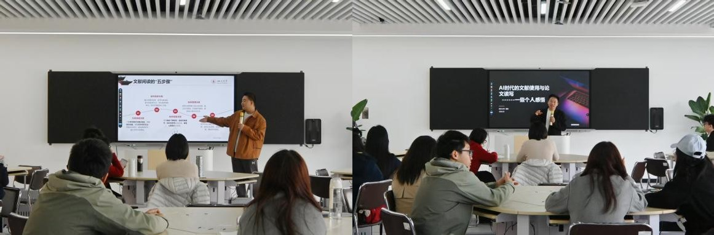

学院通知 · 科研创新
深入践行正确政绩观，图书馆举办“明远·问学——AI时代的文献使用与论文读写”讲座
发布时间：2026-03-30 09:21:58
3月20日下午，四川大学图书馆在江安图书馆五楼AI素养教育创新实验室举办“明远·问学——AI时代的文献使用与论文读写”讲座。公共管理学院2022级本科生陈宇佟、图书馆副研究馆员淳姣担任主讲，围绕文献阅读、资源利用与论文写作等内容，与同学们开展交流分享。 本次讲座立足AI时代学术学习与科研训练新需求，紧扣立德树人根本任务，坚持从学生成长成才实际需要出发，聚焦文献检索、文献阅读、资源利用和论文写作等内容，着力回应同学们在专业学习和科研训练中的实际问题，帮助同学们提升信息素养、学术能力和科研意识，推动学术支持服务更加精准、更有实效。 讲座中，陈宇佟以“浅谈文献阅读思路方法”为题，从“为何读”“如何读”两个方面介绍了文献阅读的基本思路，并结合相关案例，讲解了文献选择、阅读、整理和应用的方法，分享了关键词提炼、AI辅助总结、思维导图整理等实用技巧，引导同学们在学习研究中夯实基础、提升能力。 淳姣围绕“AI时代的文献使用与论文读写”展开讲授，系统介绍了四川大学图书馆中外文数据库资源及相关工具的使用方法，讲解了文献检索、文献管理和数据分析的基本路径，并结合实际应用场景，分析了AI工具在文献阅读和论文写作中的辅助作用。讲座同时强调，AI工具应坚持规范使用、合理使用，注重交叉验证，严守学术规范和科研诚信底线，引导同学们树立求真务实的学习科研态度。 在互动交流环节，同学们围绕AI应用、科研入门和课程论文写作等问题积极提问，两位主讲人结合学习研究实际进行了细致解答。现场交流紧扣学习科研中的具体问题，注重回应学生关切、解决实际困惑，进一步增强了讲座的针对性和实效性。 本次讲座是四川大学图书馆围绕学生成长发展需求、持续提升学术支持服务质效的具体举措。图书馆将坚持树立和践行正确政绩观，把工作的出发点和落脚点放在服务师生、服务教学科研、服务立德树人成效上，持续开展内容扎实、务实管用的学生学术支持活动，推动资源优势更好转化为育人效能，助力学生成长成才。 文：四川大学图书馆志愿者队 邢嘉航 图： 四川大学图书馆志愿者队 车智杰
